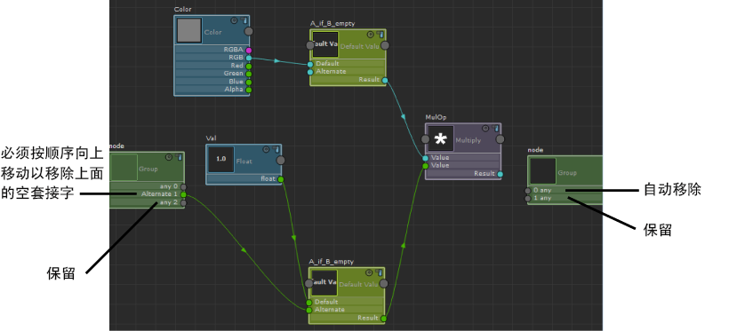
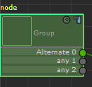
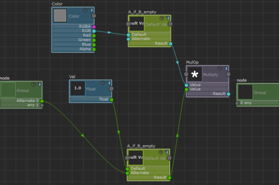

在“ShaderFX”编辑器中处理组时，组节点中可能存在需要移除的空套接字。
只要满足下列条件，空套接字就会在保存并重新加载场景时移除：
- 套接字不具有自定义标签；也就是说，它将显示默认的 any 标签。
- 空套接字下方不存在已使用的套接字（即带有连接的套接字）。
- 它不是节点中唯一的空套接字。始终保留一个空套接字。
在此示例中，保存并重新加载时，0 any 会被自动移除 ，而只有将 Alternate 1 移动到 any 0 上时，any 0 才能被移除。1 any 和 any 2 均保留。

在组节点中上移套接字
- 选择组节点。在“属性编辑器”(Attribute Editor)中，输入要上移的套接字的“活动套接字”(Active socket)编号。在此示例中，对于 Alternate 1 来说，编号为套接字 1。
- 在“属性编辑器”(Attribute Editor)中，单击“向上移动活动套接字”(Move active socket up)。

在保存并重新加载场景时，额外的空套接字会被移除。
